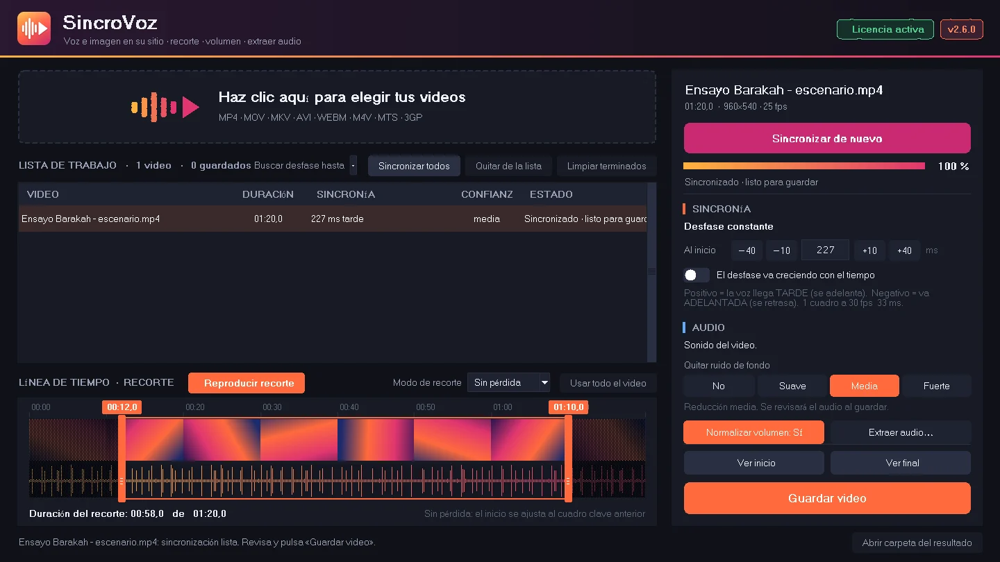
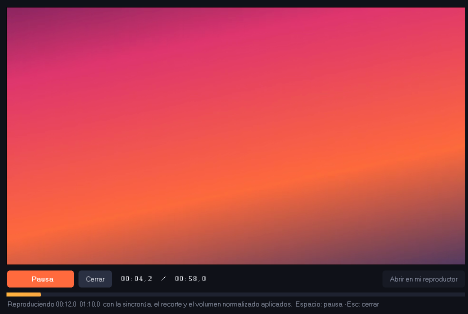
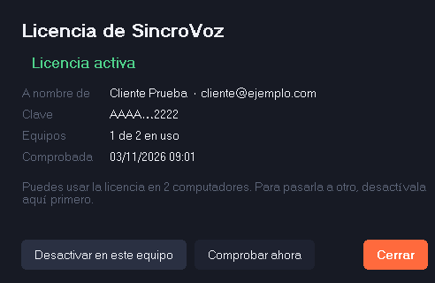

Sincronización automática
Analiza imagen y sonido y calcula el desfase al milisegundo. También corrige el desfase que va creciendo a lo largo del video.
SincroVoz detecta y corrige automáticamente el desfase entre la voz y el video, sin perder calidad de imagen. Arrastra tu video, pulsa un botón y listo.
Para Windows 8.1, 10 y 11 · Pruébalo completo antes de comprar

Pensado para músicos, docentes, creadores de contenido y cualquiera que grabe con el celular o la cámara y descubra que la voz no coincide con la boca.
Analiza imagen y sonido y calcula el desfase al milisegundo. También corrige el desfase que va creciendo a lo largo del video.
La imagen no se vuelve a comprimir: queda idéntica al original. Solo se ajusta el audio, y tu archivo original nunca se modifica.
Arrastra los tiradores sobre las miniaturas y la forma de onda, y reproduce el tramo elegido antes de guardar.
Reduce ventiladores, aire acondicionado, zumbidos y soplido, protegiendo la voz y los instrumentos. Tres intensidades.
Un botón deja el audio al nivel recomendado por YouTube, Instagram, Facebook y TikTok (−14 LUFS), sin picos que distorsionen.
Guarda el sonido en WAV de 24 bits para editar, en MP3 de 320 kbps para compartir, o como copia exacta de la pista original.
Arrástralo a la ventana o elígelo desde tus archivos. MP4, MOV, MKV, AVI y más.
Pulsa «Iniciar sincronización» y mira el avance en porcentaje.
Reproduce el inicio, el final o el recorte con la corrección aplicada. Ajusta los milisegundos si quieres.
Se crea un video nuevo junto al original, listo para publicar.


Descárgalo y pruébalo gratis con tus propios videos. Cuando te convenza, compra la licencia para guardar.
LANZAMIENTO¿Primero quieres probarlo? Descarga la versión de prueba
Todo: cargar, sincronizar, recortar, quitar el ruido, normalizar y ver el resultado en el reproductor integrado. Para guardar el video corregido y extraer el audio necesitas la licencia.
No. Todo el proceso ocurre en tu computador. SincroVoz solo se conecta a internet para activar y confirmar la licencia, y en ese momento envía únicamente la clave y el nombre del equipo.
No. La imagen se copia tal cual, sin volver a comprimirla. Solo se ajusta el audio. Si eliges el recorte «Exacto», la imagen se procesa en calidad visualmente idéntica.
La licencia funciona en 2 computadores a la vez. Para usarla en otro, abre la ventana de licencia y pulsa «Desactivar en este equipo»; después actívala en el nuevo con la misma clave.
Está en el correo de compra. También puedes verla en app.lemonsqueezy.com/my-orders con el correo con el que compraste, o escribirnos a soporte.
Sí. Consulta la política de reembolsos.